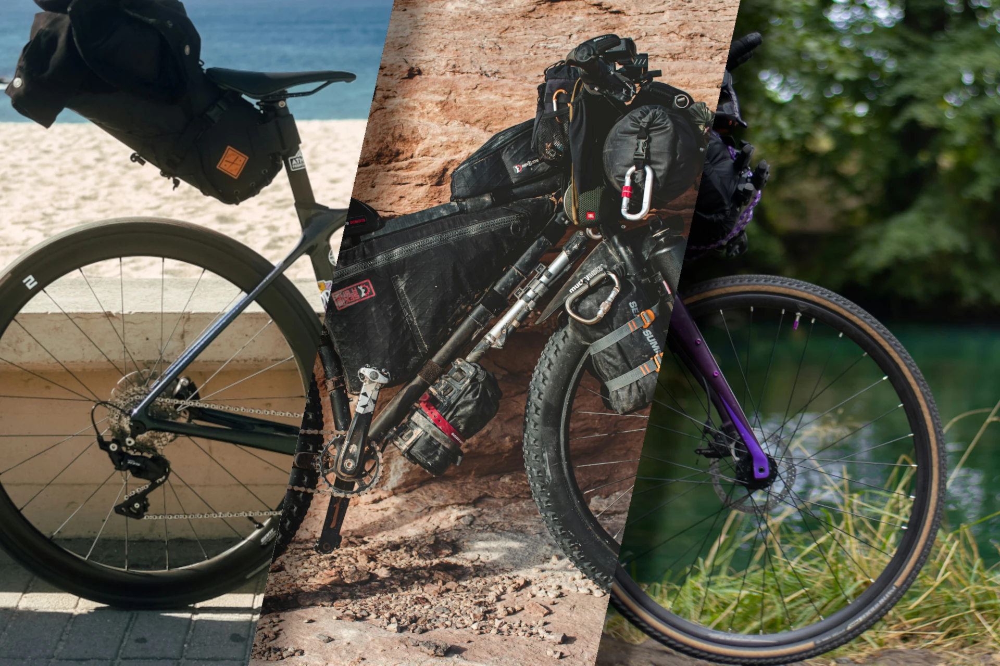
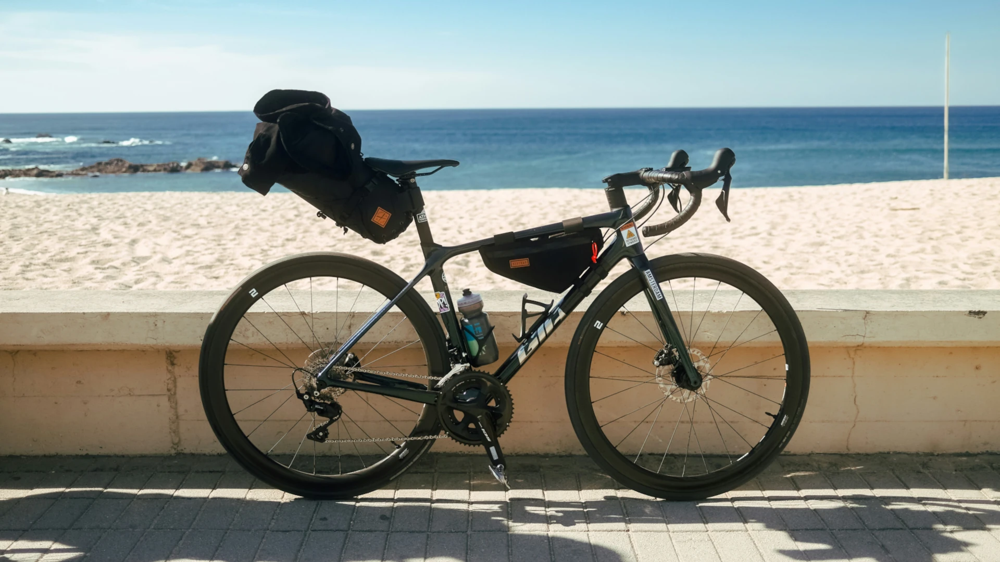
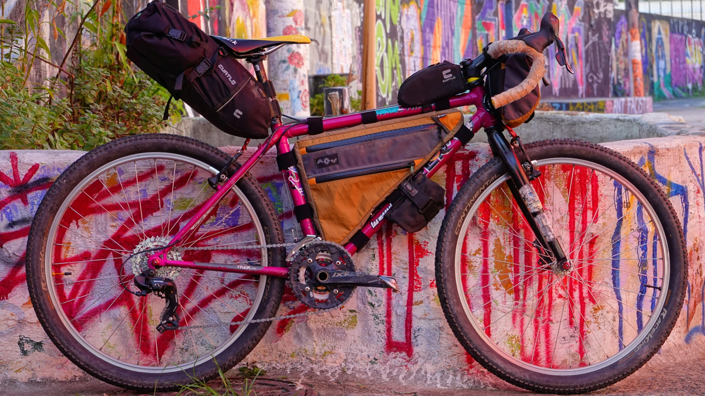
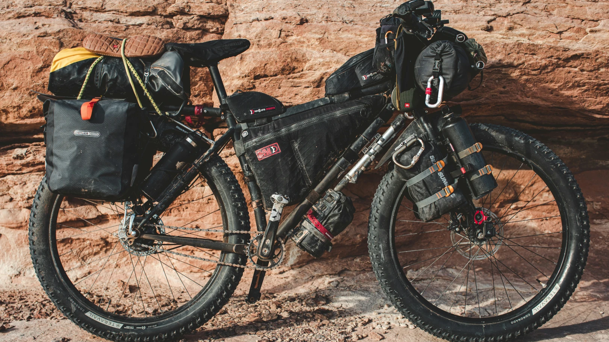

Nos vélos
Vous n'avez pas encore de vélo adapté pour le bikepacking, ou vous souhaitez remplacer le votre ? Découvrez ici les modèles que nous recommandons le plus pour chaque usage (route, gravel, off-road).
Pour la route : NexCycle Touring II
Un cadre léger, des pneus fins et une position aérodynamique ... le Touring II de chez NexCycle est le choix idéal pour tracer votre chemin sur le bitume et l'asphalte. À un prix correct et une robustesse à toute épreuve, c'est le compagnon idéal si vous roulez principalement sur route.
- Marque : NexCycle
- Modèle : Touring II
- Taille des roues : 700×28
- Prix : 969€
Pour le gravel : Panebicci Sottobosco
Dernier modèle de la marque italienne Penibicci, le Sottobosco est un vélo gravel de très bonne facture, à l'aise aussi bien sur route que dans les chemins plus techniques. Un vélo idéal pour celles et ceux qui veulent explorer sans limite, mais sans sacrifier le confort et la performance !
- Marque : Panebicci
- Modèle : Sottobosco
- Taille des roues : 700x48
- Prix : 1048€
Pour le off-road : Rollick Bikes Moonwalker
Le Moonwalker de chez Rollick Bikes est idéniablement l'un des meilleurs vélo off-road disponible à moins de 1500€ aujourd'hui. Entièrement suspensu, équipé de pneus de 56mm de large, il saura vous emmener partout, même dans les endroits les plus inattendus !
- Marque : Rollick Bikes
- Modèle : Moonwalker
- Taille des roues : 29"x56mm
- Prix : 1098€